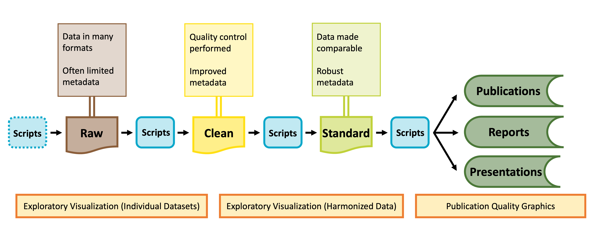

Describe how data visualization fit into the synthesis process
As shown in the graphic below, visualization can be valuable throughout the lifecycle of a synthesis project, albeit in different ways at different phases of a project.

Diagram of data stages from raw data to published products. Credit: Margaret O’Brian & Li Kui & Sarah Elmendorf
Visualization for Exploration
Tip Learning Objectives
After completing this topic you will be able to:
Explain how data visualization can be used to explore data
Exploratory data visualization is an important part of any scientific project. Before launching into analysis it is valuable to make some simple plots to scan the contents. These plots may reveal any number of issues, such as typos, sensor calibration problems or differences in the protocol over time.
These “fitness for use” visualizations are even more critical for synthesis projects. In synthesis, we are often re-purposing publicly available datasets to answer questions that differ from the original motivations for data collection. As a result, the metadata included with a published dataset may be insufficient to assess whether the data are useful for your group’s question. Datasets may not have been carefully quality-controlled prior to publication and could include any number of ‘warts’ that can complicate analyses or bias results. Some of these idiosyncrasies you may be able to anticipate in advance (e.g. spelling errors in taxonomy) and we encourage you to explicitly test for those and rectify them during the data harmonization process. Others may come as a surprise.
During the early stages of a synthesis project, you will want to gain skill to quickly scan through large volumes of data. The figures you make will typically be for internal use only, and therefore have low emphasis on aesthetics.
Exploratory Visualization Applications
Specific applications of exploratory data visualization include identifying:
Dataset coverage (temporal, spatial, taxonomic)
For example, the metadata might indicate a dataset covers the period 2010-2020. That could mean one data point in 2010 and one in 2020! This may not be useful for a time-series analysis.
Errors in metadata
Do the units “make sense” with the figure? Typos in metadata do occur, so if you find yourself with elephants weighing only a few grams, it may be necessary to reach out to the dataset contact.
Differences in methodology
Do the data from sequential years, replicate sites, different providers generally fall into the same ranges or is there sensor drift or changes in protocols that need to be addressed?
A risk of synthesis projects is that you may find you are comparing apples to oranges across datasets, as the individual datasets included in your project were likely not collected in a coordinated fashion.
A benefit of synthesis projects is you will typically have large volumes of data, collected from many locations or timepoints. This data volume can be leveraged to give you a good idea of how your response variable looks at a ‘typical’ location as well as inform your gestalt sense of how much site-to-site, study-to-study, or year-to-year variability is expected. In our experience, where one particular dataset, or time period, strongly differs from the others, the most common root cause is differences in methodology that need to be addressed in the data harmonization process.
In the data exploration stage you may find:
Harmonization issues
Are all your datasets measured in units that can be converted to the same units?
If not, can you envision metrics (relative abundance? Effect size?) that would make datasets intercomparable?
Some entire datasets cannot be used
Parts of some datasets cannot be used
Additional quality control is needed (e.g. filtering large outliers)
These steps are an important precursor to the data harmonization stage, where you will process the datasets you have selected into an analysis-ready format.
NoteActivity: Data Sleuth
In this activity, you’ll play the role of data detective. You will have many potential datasets to look through. It is important to do it correctly, but you likely won’t need or want to develop boutique code to examine each dataset, especially since some may be discarded after an initial pass.
As a project team, discuss the following points:
Decide on a structure for tracking results of exploratory data checks
Git issues? Additional columns in your team-data-inventory google sheet? Something else?
Draft a list of ‘generic checks’ you would want to apply to each dataset before inclusion in your synthesis
Use the summarytools and/or datacleanr packages to explore one exemplar dataset that you intend to include in your project
Discuss any issues you discover
Create a “to do” list for the exemplar dataset that details additional steps needed to make that dataset analysis ready (e.g. remove 1993 due to incomplete sampling, convert concentrations from mmols to mg/L, contact dataset providers to ask about anomalous values in April 2021)
Note we will work on skills to implement these steps in the Data Wrangling module in a few weeks.
Revise the list of ‘generic checks’ for remaining datasets as necessary
If you choose to save any images and/or code you used in your exploratory data visualization, decide on a naming convention and storage location
Will you add these files to your .gitignore or do you plan on committing them?
What additional plots would you ideally make that are not available through these generic tools?
# Load the librarylibrary(summarytools)# Load datadataset_1 <-read_csv("your_file_name_here.csv")# View the data in your Rstudio environmentsummarytools::view(summarytools::dfSummary(dataset_1), footnote =NA)# Alternatively,save the results for viewing later, or to share with your teamprint(summarytools::dfSummary(dataset_1), footnote =NA,file ='dataset_01_summary.html')
1
Careful! Use lowercase ‘v’ in the view function of the summarytools package
# Load the librarylibrary(datacleanr)# Load datadataset_1 <-read_csv("your_file_name_here.csv")# Launch the shiny app and view the data interactivelydatacleanr::dcr_app(dataset_1)
Both of these packages have extensive vignettes and online instructional materials. See here for one from summarytools and here for one from datacleanr.
Final Pre-Code Step: Draw!
Tip Learning Objectives
After completing this topic you will be able to:
Explain why drawing a graph is a useful step before writing code to ‘actually’ make the graph
It may sound facile, but one of the best things you can do to make your life easier when you ‘actually’ start making graphs is to draw your hypothetical graph. You will likely find that creating a small sketch of your ideal figure will help you make some critical decisions. This can save you time so you don’t laboriously code a graph that–once created–doesn’t meet your expectations. You may still change your mind once you’ve seen the graph your code produces (and that is okay!) but you’ll likely make some of the necessary larger decisions with pen and paper and streamline your process in generating a visualization that perfectly meets your needs.
NoteActivity: Sketch-y Graphing
On a piece of scrap paper, draw one graph you think might be helpful in your project. Then, ask yourself the following questions:
Does the graph make it clear whether your hypothesis is or is not supported?
How / will you identify statistical significance?
What type of graph makes the most sense (e.g., boxplot vs. violin plot, etc.)?
What information is contained in the axes versus stored in other graph elements (e.g., point shape, color, transparency, etc.)?
Graphing with ggplot2
Tip Learning Objectives
After completing this topic you will be able to:
Define fundamental ggplot2 vocabulary
Createggplot2 graphs
You may already be familiar with the ggplot2 package in R but if you are not, it is a popular graphing library based on The Grammar of Graphics. Every ggplot is composed of four elements:
A ‘core’ ggplot function call
Aesthetics
Geometries
Theme
Note that the theme component may be implicit in some graphs because there is a suite of default theme elements that applies unless otherwise specified.
This module will use example data to demonstrate these tools but as we work through these topics you should feel free to substitute a dataset of your choosing! If you don’t have one in mind, you can use the example dataset shown in the code chunks throughout this module. This dataset comes from the lterdatasampler R package and the data are about fiddler crabs (Minuca pugnax) at the Plum Island Ecosystems (PIE) LTER site.
#| message: false#| warning: false# Load needed librarieslibrary(tidyverse); library(lterdatasampler)# Load the fiddler crab datasetdata(pie_crab)# Check its structurestr(pie_crab)
With this dataset in hand, let’s make a series of increasingly customized graphs to demonstrate some of the tools in ggplot2.
Let’s begin with a scatterplot of crab size on the Y-axis with latitude on the X. We’ll forgo doing anything to the theme elements at this point to focus on the other three elements.
All theme elements require these element_... helper functions. element_blank removes theme elements but otherwise you’ll need to use the helper function that corresponds to the type of theme element (e.g., element_text for theme elements affecting graph text)
We can further modify ggplot2 graphs by adding multiple geometries if you find it valuable to do so. Note however that geometry order matters! Geometries added later will be “in front of” those added earlier. Also, adding too much data to a plot will begin to make it difficult for others to understand the central take-away of the graph so you may want to be careful about the level of information density in each graph. Let’s add boxplots behind the points to characterize the distribution of points more quantitatively.
By putting the boxplot geometry first we ensure that it doesn’t cover up the points that overlap with the ‘box’ part of each boxplot
ggplot2 also supports adding more than one data object to the same graph! While this module doesn’t cover map creation, maps are a common example of a graph with more than one data object. Another common use would be to include both the full dataset and some summarized facet of it in the same plot.
Let’s calculate some summary statistics of crab size to include that in our plot.
#| message: false# Load the supportR librarylibrary(supportR)# Summarize crab size within latitude groupscrab_summary <- supportR::summary_table(data = pie_crab, groups =c("site", "latitude"),response ="size", drop_na =TRUE)# Check the structurestr(crab_summary)
With this data object in-hand, we can make a graph that includes both this and the original, un-summarized crab data. To better focus on the ‘multiple data objects’ bit of this example we’ll pare down on the actual graph code.
#| fig-align: center#| fig-width: 9#| fig-height: 4ggplot() +geom_point(pie_crab, mapping =aes(x = latitude, y = size, fill = site),pch =21, size =2, alpha =0.2) +geom_errorbar(crab_summary, mapping =aes(x = latitude,ymax = mean + std_error,ymin = mean - std_error),width =0.2) +geom_point(crab_summary, mapping =aes(x = latitude, y = mean, fill = site),pch =23, size =3) +theme(legend.title =element_blank(),panel.background =element_blank(),axis.line =element_line(color ="black"))
1
If you want multiple data objects in the same ggplot2 graph you need to leave this top level ggplot() call empty! Otherwise you’ll get weird errors with aesthetics later in the graph
2
This geometry adds the error bars and it’s important that we add it before the summarized data points themselves if we want the error bars to be ‘behind’ their respective points
NoteActivity: Graph Creation (P1)
In a script, attempt the following with one of either yours or your group’s datasets:
Make a graph using ggplot2
Include at least one geometry
Include at least one aesthetic (beyond X/Y axes)
Modify at least one theme element from the default
NoteActivity: Graph Creation (P2)
In a script, attempt the following:
Remove all theme edits from the graph you made in the preceding activity and assign them to a separate object
Then add that object to your graph
Make a second (different) graph and add your consolidated theme object to that graph as well
Multi-Panel Graphs
Tip Learning Objectives
After completing this topic you will be able to:
Describe the difference(s) between “faceted” graphs and “plot grids”
Create faceted ggplot2 graphs
Assemble grids of plots
It is sometimes the case that you want to make a single graph file that has multiple panels. For many of us, we might default to creating the separate graphs that we want, exporting them, and then using software like Microsoft PowerPoint to stitch those panels into the single image we had in mind from the start. However, as all of us who have used this method know, this is hugely cumbersome when your advisor/committee/reviewers ask for edits and you now have to redo all of the manual work behind your multi-panel graph.
Fortunately, there are two nice entirely scripted alternatives that you might consider: Faceted graphs and Plot grids. See below for more information on both.
In a faceted graph, every panel of the graph has the same aesthetics. These are often used when you want to show the relationship between two (or more) variables but separated by some other variable. In synthesis work, you might show the relationship between your core response and explanatory variables but facet by the original study. This would leave you with one panel per study where each would show the relationship only at that particular study.
This is a ggplot2 function that assumes you want panels laid out in a regular grid. There are other facet_... alternatives that let you specify row versus column arrangement. You could also facet by multiple variables by putting something to the left of the tilde
2
We can remove the legend because the site names are in the facet titles in the gray boxes
In a plot grid, each panel is completely independent of all others. These are often used in publications where you want to highlight several different relationships that have some thematic connection. In synthesis work, your hypotheses may be more complicated than in primary research and such a plot grid would then be necessary to put all visual evidence for a hypothesis in the same location. On a practical note, plot grids are also a common way of circumventing figure number limits enforced by journals.
Let’s check out an example that relies on the cowplot library.
#| message: false#| fig-align: center#| fig-width: 9#| fig-height: 5# Load a needed librarylibrary(cowplot)# Create the first graphcrab_p1 <-ggplot(pie_crab, aes(x = site, y = size, fill = site)) +geom_violin() +coord_flip() +theme_bw() +theme(legend.position ="none")# Create the secondcrab_p2 <-ggplot(pie_crab, aes(x = air_temp, y = water_temp)) +geom_errorbar(aes(ymax = water_temp + water_temp_sd, ymin = water_temp - water_temp_sd),width =0.1) +geom_errorbarh(aes(xmax = air_temp + air_temp_sd, xmin = air_temp - air_temp_sd),width =0.1) +geom_point(aes(fill = site), pch =23, size =3) +theme_bw()# Assemble into a plot gridcowplot::plot_grid(crab_p1, crab_p2, labels ="AUTO", nrow =1)
1
Note that we’re assigning these graphs to objects!
2
This is a handy function for flipping X and Y axes without re-mapping the aesthetics
3
This geometry is responsible for horizontal error bars (note the “h” at the end of the function name)
4
The labels = "AUTO" argument means that each panel of the plot grid gets the next sequential capital letter. You could also substitute that for a vector with labels of your choosing
NoteActivity: Graph Creation (P3)
In a script, attempt the following:
Assemble the two graphs you made in the preceding two activities into the appropriate type of multi-panel graph
What is Project Management?
Tip Learning Objectives
After completing this topic you will be able to:
Identify some common project management frameworks
There are dozens of formal project management frameworks/approaches, most of which come out of industries (such as software development, construction, and manufacturing) that require teams of people to work together with efficiency and accountability. You’ve probably heard the names tossed around: Agile, Scrum, Lean Sigma Six, Kanban, etc. There are whole industries devoted to training project managers and developing apps to support them.
The trick, for scientific research projects, is to identify the approaches that also allow questions and goals to evolve along the way – and that don’t require a full-time project manager to implement.
Some common elements of project management schemes:
PM Activity
Industry Outcome
Science Outcome
Build a logical sequence of steps
Ensure needed resources/people tools are available when needed
Know which skills are needed when; know what form the output of each script/analysis needs to take
Identify dependencies
Avoid supply chain lags
Know what data you need and when you need them
Clarify responsibilities/accountabilities
Document productivity and responsibility
Avoid duplication of effort; keep the project moving; support authorship/credit agreements
Identify and mitigate risks
Know when to abort or revise project goals
Assess threats to project success early and make a plan B
How to Start
Tip Learning Objectives
After completing this topic you will be able to:
Articulate key principles of project management
Develop (or refine) the project management framework for your team project
Like outlining a paper, there are a few basic steps to developing a solid project management plan. And it’s easy to think you can skip over the first steps because they seem so obvious. The trouble is, they may be obvious to each team member in different ways. Taking the time to make sure you all see them the same way can save worlds of headache down the road.
Define the project
Agree on the goal and the timeline
If the timeline is determined externally (as for SSECR or for most grants), you’ll need to start with the timeline (possibly budget) and scope the project to fit the time and funds you have available.
Develop a list of the steps needed to get from where you are to where you need to be.
Place the steps in order and define the inputs and outputs of each step.
Identify the people responsible for each step and an approximate timeline for its completion.
Identify time points for check-in and re-evaluation
Honestly, you could do all of this in a spreadsheet, but there are a few types of visualizations that a lot of people find helpful, which we’ll discuss later today. First, though, we’ll remind ourselves of why the investment in planning time is so valuable.
WarningDiscussion: Project Management “Fails”
Anyone who has completed a moderately complex task has stories about planning failures: critical tools left back at the lab when doing field work; key recipe ingredients not purchased before the guests arrive; logistical questions un-asked and un-planned for; mismatched assumptions revealed only at the last moment…
Part 1
Reflect silently on one of your own project management “fails”
What went wrong?
How could planning have prevented or improved the situation?
Part 2
Share your project management “fails”
If time allows, consider what aspects of planning are most likely to be skipped or overlooked
Setting the Project Scope
Tip Learning Objectives
After completing this topic you will be able to:
Define common approaches for defining project scope
Identify and make explicit internal logical leaps
For defining the project and agreeing on the goals, mind maps are useful individual or group exercises. Mind maps offer a lightly-structured way of exploring a focus area. The graphical approach helps to surface unexpected connections and reveal gaps in understanding. Tools for developing them can be as simple as pen and paper, basic drawing apps, a zoom whiteboard, or online collaboration and project planning tools such as Miro, Mural, and FigJam.
Start with a general topic or question, then expand to the precedents and implications. Then expand from there to the assumptions, modifying conditions, or follow-on implications related to each of your precedents or implications. Often, looking at a problem head-on reveals little new, but surfacing and testing the underlying assumptions can open up fresh territory.
The mind map will likely surface many relevant and un-answered questions, but time is limited. You’ll need to choose one on which to focus. One way to prioritize them is to place them on a two-by-two matrix of payoff v. feasibility. The most important payoff for a particular team may be scientific novelty, practical importance, or whether it’s a fun and engaging question for the group. Often, the most interesting questions will also require the most effort and the group will need to determine what trade-offs they are willing to accept. But sometimes, a question emerges that is both interesting and feasible–perhaps because a new source of data has just become available or simply because no one saw the question from that angle before.